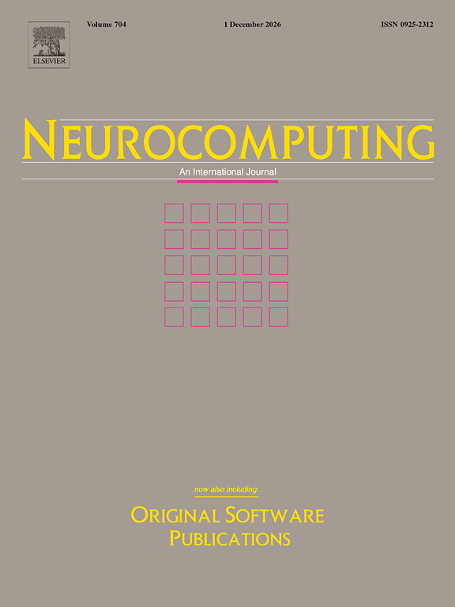

Kyungpook National University · CSE
SOCAL Lab
Statistical Optimization & Collaborative AI Learning
The lab
The SOCAL Lab in the Department of Computer Science and Engineering (CSE) at Kyungpook National University focuses on federated learning, synthetic data, imbalanced regression, and AI alignment. We are actively recruiting motivated Master's and Ph.D. students. If you are interested, please review our Prospective Students page and contact natekang@knu.ac.kr.
경북대학교 컴퓨터학부 SOCAL Lab에서는 연합학습, 합성 데이터, 불균형 회귀, AI 정렬을 연구합니다. 석·박사 과정 신입생을 모집 중이오니, 관심 있는 분은 Prospective 페이지를 참고하신 후 natekang@knu.ac.kr로 문의 부탁드립니다.
Latest
Recent acceptances
NeurIPS 2026 · Poster
Taming the Tails
Distributionally robust optimization for imbalanced regression.

UAI 2026 · Poster
Conditional diffusion for tabular regression
Imbalanced tabular regression, in the UAI proceedings.

Neurocomputing
Rare but critical
Copula-calibrated augmentation for imbalanced tabular regression.